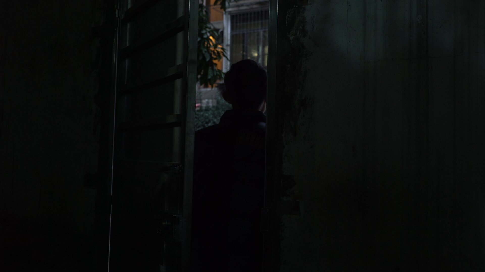

难/ Nan

2019 / 79:31/ HD video
Hunan Dialect / China / Color
Nan, my uncle, lives with his parents in a first-floor apartment in the southern Chinese city, Changsha. The apartment is in perpetual tension with talks of life and death, questions of belonging, and a good dose of humor. Lingering over everyday life, the film acquires a durational feel—things happen patiently, even as at times ‘nothing’ seems to. It is a meditation on time, aging, and the economies of care in contemporary China.
-
" Zuqiang's film is neither long nor slow. It simply unfolds at the pace with which Nan and his parents move through the world—the rhythms to which anyone who is invited into their world would be asked to synchronize. Several scenes in the film follow Nan’s actions, sending our restless bodies out of sync. We learn about disability not only as symptoms in a body, but as social relationships—physical and temporal relationships that we too become implicated in. More than discerning narratives or plots, the work that the audience does in these scenes is about syncing with other(’s) rhythms. These are acts of love. The process is imperfect. " - Sindhu Thirumalaisamy